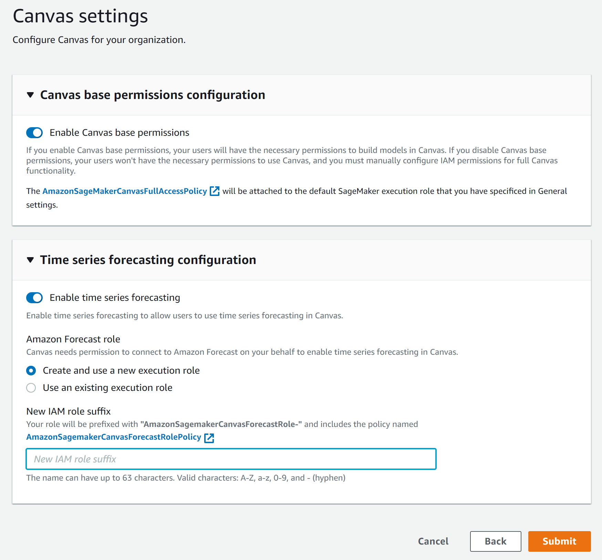
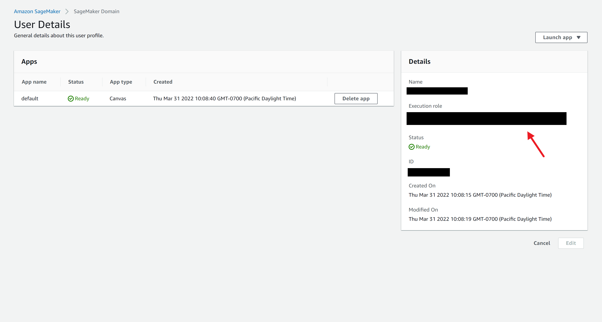

Grant Your Users Permissions to Perform Time Series Forecasting
In order to perform time series forecasts in Amazon SageMaker Canvas, your users must have the necessary permissions. The preferred method to give your users these permissions is to turn on the time series forecasting option when setting up the Amazon SageMaker Domain, or when editing the settings for a specific user profile. You can also use the manual method of attaching a policy and trust relationship for Amazon Forecast to the AWS Identity and Access Management (IAM) role.
If you want to encrypt your time series forecasts with your own key, you must use an AWS KMS key and modify your KMS key's policy to grant permissions to the role used by Amazon Forecast. For more information about setting up your KMS key and modifying the policy for time series forecasting, see Prerequisites for time series forecasting.
Domain setup method
SageMaker provides you with the option to grant time series forecasting permissions to users through the Domain settings. You can toggle the permissions for all of the users in your Domain, and SageMaker manages attaching the required IAM policy and trust relationship for you.
If you are setting up your Amazon SageMaker Domain for the first time and want to turn on time series forecasting permissions for all users in the Domain, then use the following procedures.
Your users should now have the necessary permissions to perform time series forecasting in SageMaker Canvas.
User setup method
You can configure time series forecasting permissions for individual users in an existing Domain. The user profile settings override the general Domain settings, so you can grant permissions to specific users without giving permissions to all of your users. To grant time series forecasting permissions to a specific user that doesn't already have permissions, use the following procedure.
-
Open the SageMaker console at https://console.aws.amazon.com/sagemaker/
. -
On the left navigation pane, choose Admin configurations.
-
Under Admin configurations, choose Domains.
-
On the Domains page, choose your Domain.
-
In the User profiles tab, select the name of the user whose permissions you want to edit.
-
On the User Details page, choose Edit.
-
Choose the Canvas settings page.
-
Turn on Enable Canvas base permissions. These permissions are required in order to turn on time series forecasting permissions.
-
Turn on the Enable time series forecasting option.
-
If you want to use a different execution role for the user than the role specified in the Domain, select Create and use a new execution role, or Use an existing execution role if you already have an IAM role ready to use.
Note
If you want to use an existing IAM role, make sure that it has the IAM policy
AmazonSageMakerCanvasForecastAccessattached and has a trust relationship that establishes Amazon Forecast as a service principal. For more information, see the section IAM role setup method. -
The Canvas settings page should look like the following screenshot. Finish making any other changes to your user profile, and then choose Submit to save your changes.

Your user should now have permission to do time series forecasting in SageMaker Canvas.
You can also remove your user's permissions by using the preceding procedure and turning off the Enable time series forecasting option.
IAM role setup method
You can manually grant your users permissions to perform time series forecasting in Amazon SageMaker Canvas by adding additional permissions to the AWS Identity and Access Management (IAM) role specified for the user’s profile. The IAM role must have a trust relationship with Amazon Forecast and an attached policy that gives permissions to Forecast.
The following section shows you how to create the trust relationship and attach the
AmazonSageMakerCanvasForecastAccess managed policy to your IAM role, which
grants the minimum permissions necessary for time series forecasting to work in SageMaker Canvas.
Note
The AmazonSageMakerCanvasForecastAccess policy grants permissions to access
the SageMaker-created Amazon S3 bucket, which is the default storage location for Canvas application
data. If you've specified a custom Amazon S3 storage location for Canvas application data, you
must update the permissions in the policy to your own Amazon S3 bucket. For more information about
custom Amazon S3 storage locations for Canvas, see Configure your Amazon S3 storage.
To configure an IAM role with the manual method, use the following procedure.
-
Open the SageMaker console at https://console.aws.amazon.com/sagemaker/
. -
On the left navigation pane, choose Admin configurations.
-
Under Admin configurations, choose Domains.
-
On the Domains page, choose your Domain.
-
From the list of User profiles, select the profile of the user you to whom want to grant time series forecasting permissions.
-
Under Details, copy or make a note of the name of the user's Execution role. The name of the IAM role should be similar to the following:
111122223333. -
Once you have the name of the user's IAM role, go to the IAM console
. -
Choose Roles.
-
Search for the user's IAM role by name from the list of roles and select it.
-
Under Permissions, choose Add permissions.
-
Choose Attach policies.
-
Search for the
AmazonSageMakerCanvasForecastAccessmanaged policy and select it. Choose Attach policies to attach the policy to the role.After attaching the policy, the role's Permissions section should now include
AmazonSageMakerCanvasForecastAccess. -
Return to the IAM role's page, and under Trust relationships, choose Edit trust policy.
-
In the Edit trust policy editor, update the trust policy to add Forecast as a service principal. The policy should look like the following example.
{ "Version": "2012-10-17", "Statement": [ { "Effect": "Allow", "Principal": { "Service": [ "sagemaker.amazonaws.com", "forecast.amazonaws.com" ] }, "Action": "sts:AssumeRole" } ] } -
After editing the trust policy, choose Update policy.
You should now have an IAM role that has the policy AmazonSageMakerCanvasForecastAccess attached to it and a trust relationship
established with Amazon Forecast, giving users permission to perform time series forecasting in SageMaker Canvas.
For information about AWS managed policies, see Managed policies and inline
policies.
Note
If you use this method to set up time series forecasting and want to use AWS KMS encryption for your forecasts, then you must configure your KMS key’s policy to grant additional permissions. For more information, see Prerequisites for time series forecasting.